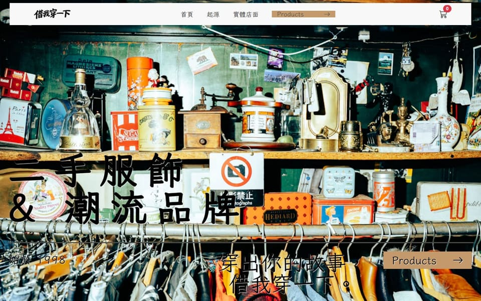
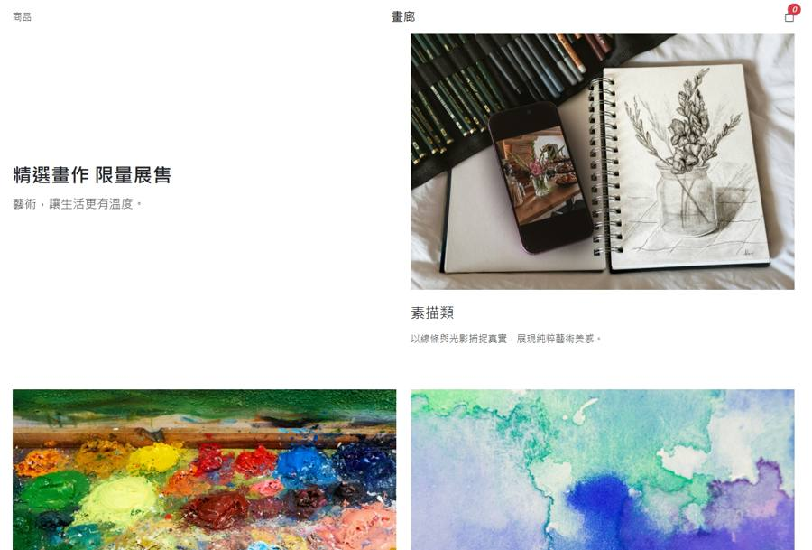
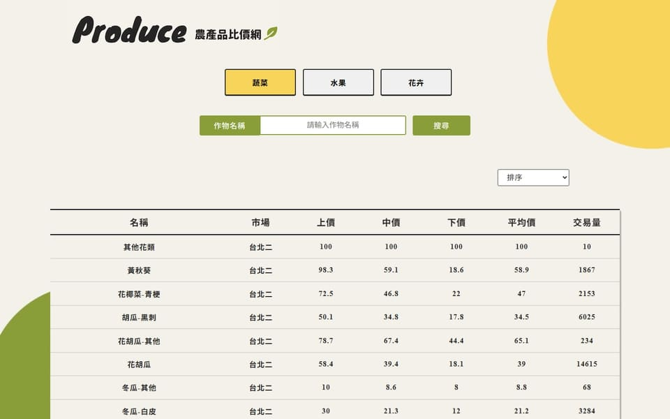

▶ 後台操作曾任營造業工程師四年,習慣在時程與品質的壓力下和不同角色協調,並對成果負責。轉入前端後,把這份嚴謹帶進開發:重視清楚的程式結構、穩定的使用者體驗,以及別人接手也看得懂的文件。
語言與基礎
React 生態系
串接與資料
工具
NEXT → TypeScript · Tailwind CSS · Next.js

▶ 後台操作
▶ 後台操作
05 — CONTACT
正在尋找前端工程師職缺,歡迎來信聊聊。